Wuschel-example.nb
Example Cellzilla2D notebook.
GPL License applies.
See http://xlr8r.info and http://cellzilla.info for further details.
This is a Cellzilla2D example that is based on the "Activator" model in
H Jonsson, M Heisler, GV Reddy, V Agrawal, V Gor, BE Shapiro, E Mjolsness & EM Meyerowitz (2005) "Modeling the organization of the WUSCHEL expression domain in the shoot apical meristem," Bioinformatics, Vol. 21 Suppl. 1, 2005, pages i232-i240.
For more details on the model see
http://bioinformatics.oxfordjournals.org/cgi/content/abstract/21/suppl_1/i232
This CPU times shown reflect a 2015 MacBook.

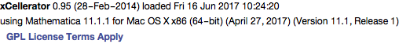
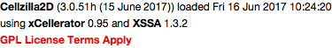
build a honeycomb template
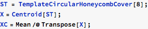
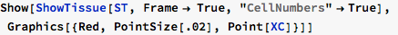
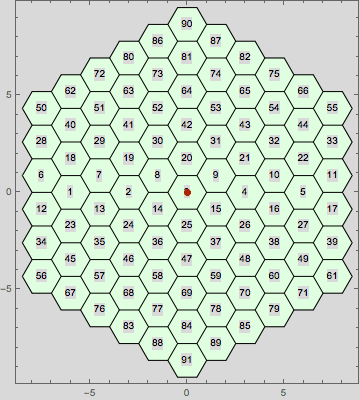
DISPLAY THE CELLS ON THE BOUNDARY
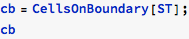
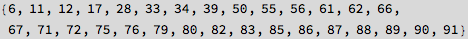
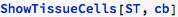
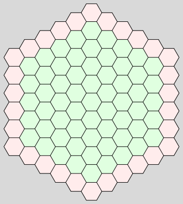
convert to a dynamic tissue for the simulation
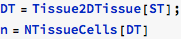

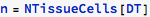
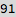
Define the Cellerator network that will produce the ODES as specified in the model
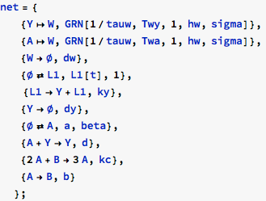
L1 is an indicator function that must be 1 on the boundary and zero elsewhere. Te reaction for L1 ensures that it remains equal to its initial condition, as demonstrated in the following differential equation:
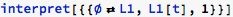
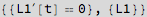
Define the initial conditions of all variables. Here we use random values for A, B, W, Y.
We set L1 equal to 1 on the boundary and zero elsewhere.
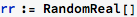
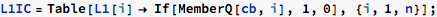
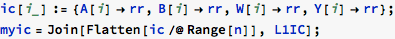
Define the parameters for the model
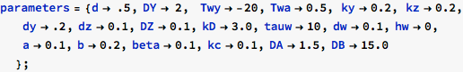
Run a StaticSimulation
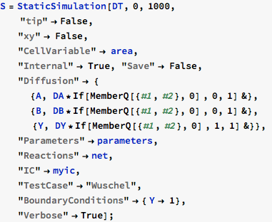
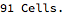
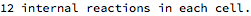
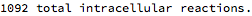

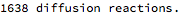
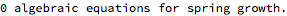
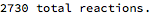
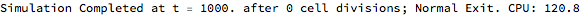
Plot the results of a single variable (depending upon geometry and parameter values it can go to either a steady state or it might oscillate)
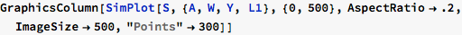
Use SimShowFinal to find the solution at the stop time of the simulation and automatically set the scales.
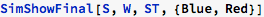
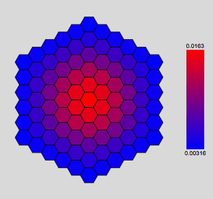
Use SimAnimate and ListAnimate to plot convergence
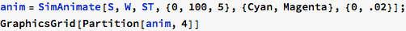

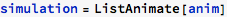
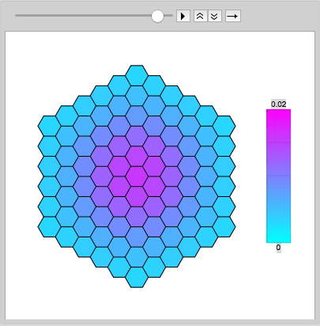